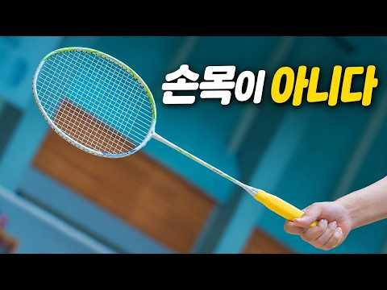

成長細節 01 拍面控制換一招 ↗
把拍面控制，練得更細。
上場只記這一句
準備時鬆一點，擊球後再放鬆。
從頭到尾都把球拍握得很緊，換方向就不容易。先握穩，再讓手指有空間調整拍面。
把一拍拆開，看清三個細節
- 準備
未擊球時，手指能不能微調握柄？先握穩，別一直握死。
- 擊球
正反手換握後，拍面是否仍朝向你想打的方向？
- 下一拍
打完後有沒有恢復可調整的握拍，而不是一直越握越緊？
放進回合：加入正反手交替或短回合，記下拍面失控常出現在哪種來球。
TRY IT
帶著一個細節，試一組。
- 請同學在近距離輕輕送球，選好同一個目標。
- 打 10 球。每球結束後，讓握拍回到能調整的狀態。
- 再打 10 球，比較哪一組較少打歪。
練完只看一件事
打歪幾球？
每組 10 球，記下打偏目標的球數。兩組用同一個目標。

重點約 95 秒想先看動作？
這一段就夠你先試。
留意手指怎樣調整握柄，先不用模仿大幅揮拍。
看 95 秒重點1:33–3:08 · 韓語原片
連結會跳到開始處，到結尾時間就可以停；不會自動停止。可在 YouTube 查看可用字幕。
標記只記錄試練進度，儲存在這部裝置。
一個人怎麼練？還有小提醒
自己先試：慢慢換正手、反手拍面，做 10 次。有同學陪練時，再試有球控制。
記住：鬆一點也要握穩球拍。正手、反手和不同球路，手指的用法會有變化。
下一步：同一個目標打得較穩後，再試正手、反手交替。